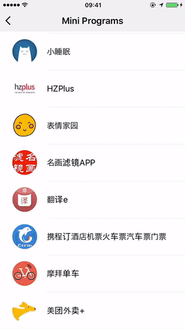
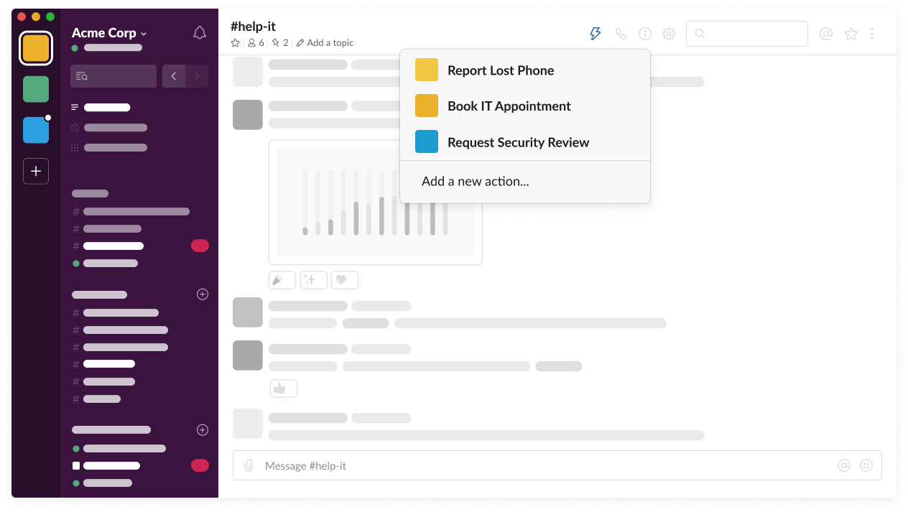
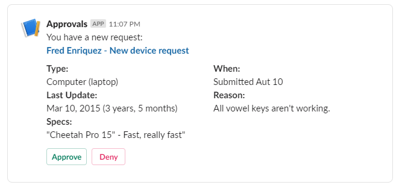
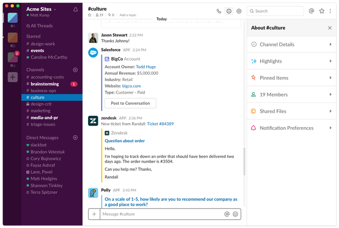
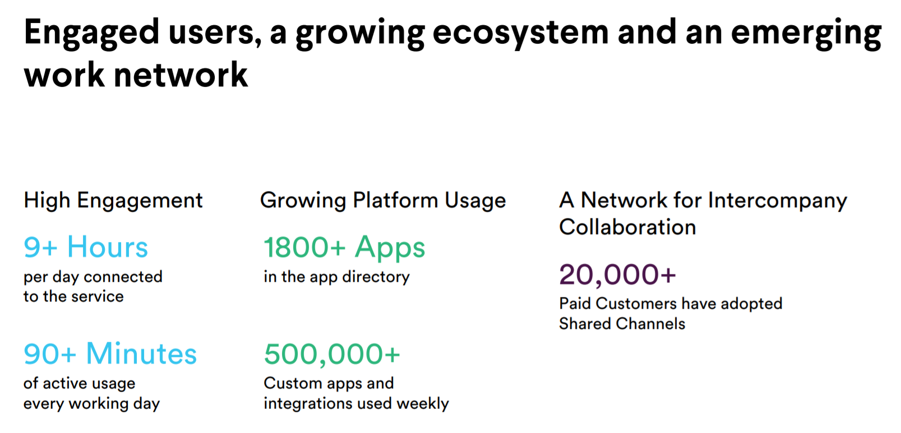

Slack - the workplace super app
Slack recently concluded it’s developer conference, Spec-2019. Showcasing Slack App toolkit, a collection of artifacts, building on its Block kit UI framework revealed back in Feb 2019. This toolkit could be the beginning of the Slack’s WeChat moment.
WeChat is WhatsApp for China owned by Tencent and used by over 900 Mn Chinese.
WeChat introduced mini-programs in December 2017 which allowed users to book cabs, flight tickets, order food etc. all from within the WeChat app making it a super app.
Within a year its store reached 1M mini-programs and it is emerging as an e-commerce challenger in China.
What do WeChat and Slack have in common ? Both are chat applications where the former is serving the consumer space and the latter is serving the B2B workplace space . Psst - Note that WeChat had launched its workplace chat app too and that’s a story for another day
Before Slack this is how an employee would do things in a company:
Today, the employee can do all that from Slack without switching tabs or opening multiple applications.


Existing applications like Salesfoce, Zendesk, JIRA etc. will take a step back as Slack becomes the front runner through which most of the existing tools will be used.

A slack custom application will be a must for custom apps built on Salesforce or Servicenow which look boring- with underwhelming UX.
New Slack-first companies emerge as developer's build apps for Slack users. Apps like donut.com,polly.ai , and paperbot.ai are built for Slack and it is their primary distribution channel just like Apple and Google stores. Any team from customer support to sales to marketing, they can just install theír apps from the store just like WeChat mini apps) or Chrome web extensions store.
In SMB segment, Slack is adopted by the whole company but in the enterprise segment it is predominantly used by tech teams. It has to be adopted by all the teams in the enterprise for them to fully realize the value of Slack.
As a super app Slack will become a master interface and this will help it to retain existing customers, reduce churn, and improve net dollar retention as more teams adopt Slack. Any office irrespective of scale or team can use Slack and that continues to be its strength for the near future.